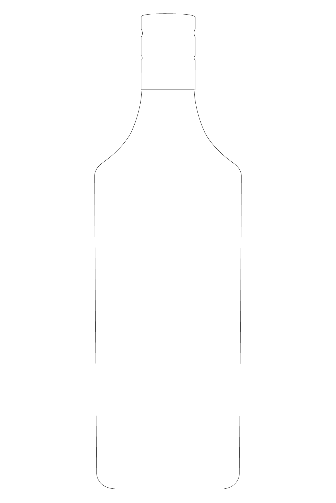
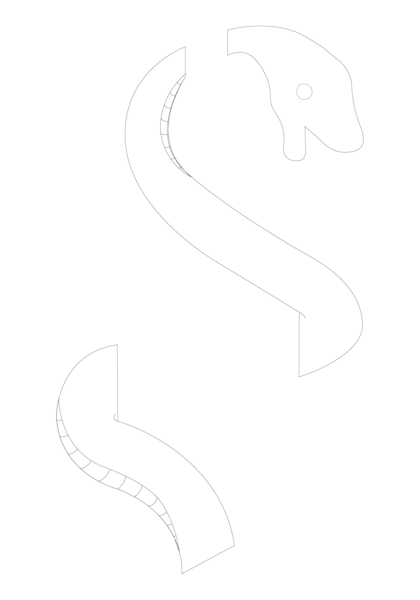
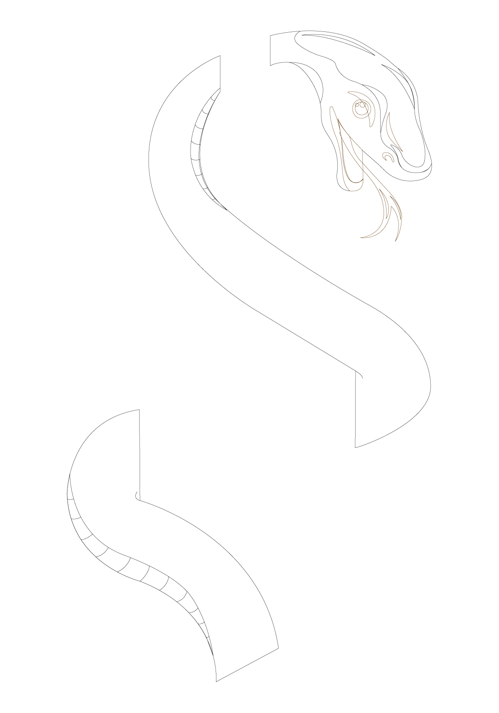
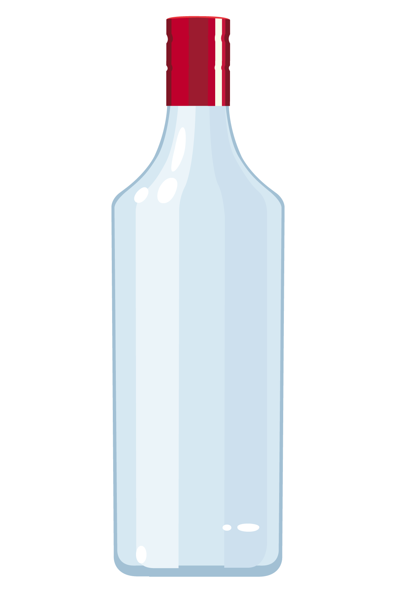
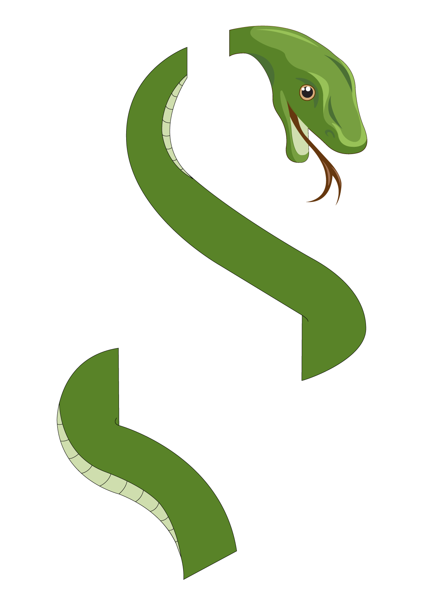
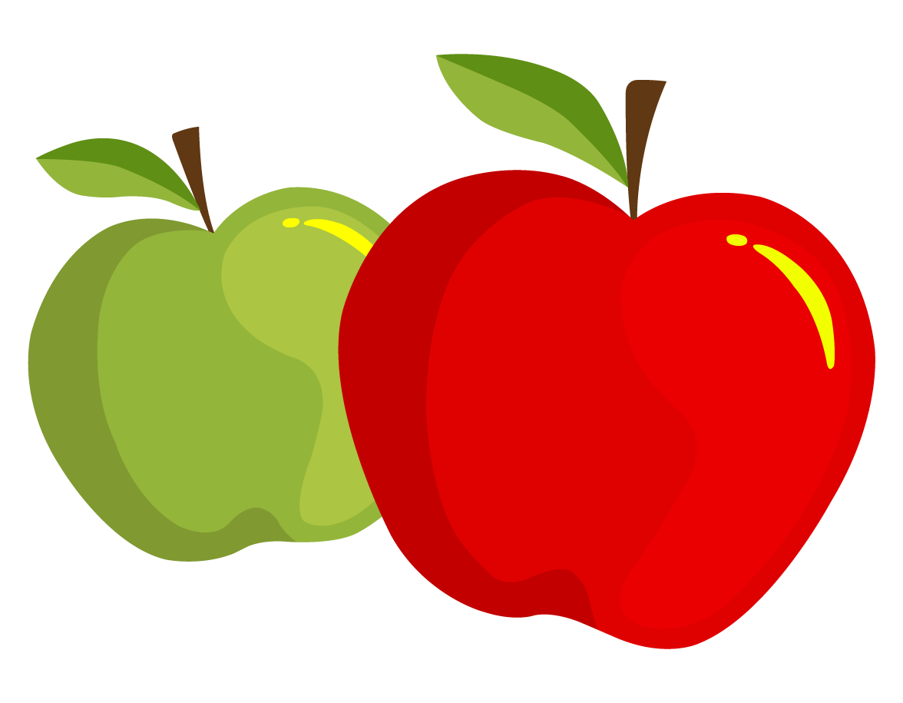

Contexte : Dans le cadre d'un travail individuel, il m'a été demandé de réaliser le logo d'une marque fictive de gin dont la thématique est l'Eden.
Cette marque n'existant pas, il m'a fallut partir d'une feuille blanche et créer ce logo en partant de rien.
J'ai tout d'abord commenceé par définir les éléments que je voulais retrouver dans mon logo. J'ai donc choisis de partir d'une bouteille et d'y ajouter des pommes et un serpent afin que mon logo final évoque directement l'Eden.


Mes éléments définis et après avoir créer leur forme générale j'ai fais le choix d'ajouter des détails à chacun d'entre eux. Cette étape ayant pour but d'apporter du réalisme à mon logo et de le rendre plus qualitatif.

Après avoir détaillé chacun des mes éléments j'ai ajouté de la couleur à chacun d'entre eux.



La dernière étape de mon processus de création était de réunir chacun de ces 3 élements, d'en ajuster les dimensions et de les placer de façon à obtenir un résultat optimal.
Pour découvrir le résultat final, je vous invite à cliquer ci-dessous.
Découvrir le résultat final
{kind=link}